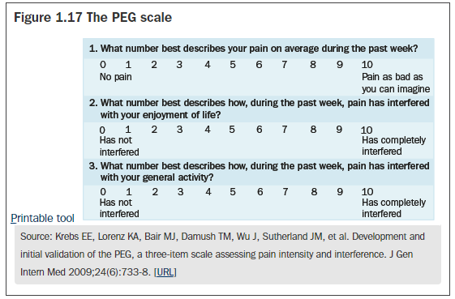

These typography examples show the existing TG typography plus some on brand options to consider.
This interactive prototype shows snippets of website content & guide content for a realistic comparison. We have purposefully not indicated the fonts used to focus the review on the content legibility. Note that the heading font is always Montserrat to keep all options brand aligned.
Please use the conent toggle to swithc between the wbesite and guide content examples.
Then switch between the styles to find what you think is the most legible.
The size control then works on each style to see how providing a text size control to users could function and effect their experience.
Example body copy content with bold weight styles as well as italic style text.
An example text link style looks like this.
Therapeutic Guidelines is a leading source of independent, evidence-based, practical treatment advice to assist practitioners with decision making at the point-of-care.
Therapeutic Guidelines are regularly updated, based on the latest international literature, interpreted by Australia’s most respected experts, with input from an extensive network of general practitioners, pharmacists and other users.
May 2023 updates:
For a summary of other practice-changing updates in the May 2023 release, see Updates.
Independence is an essential feature of Therapeutic Guidelines. Funded only by subscribers, meaning no grants, advertising, shareholders or sponsors. To protect and maintain independence, a strict conflict of interest policy is in place.
Antibiotic prescribing in primary care: summary table
Antibiotic guidelines
Diabetes guidelines
Example body copy content with bold weight styles as well as italic style text.
An example text link style looks like this.
Bites, including clenched-fist injuries (in which the hand is lacerated by contact with another person's teeth), often become infected. The bacteria associated with human bites (including clenched-fist injuries) are Staphylococcus aureus, Eikenella corrodens, Streptococcus species and beta-lactamase–producing anaerobic bacteria. The bacteria associated with animal bites are Pasteurella species, S. aureus, Capnocytophaga canimorsus, Streptococcus species and anaerobic bacteria. Cat bites have a higher incidence of deep infection than dog bites.
A different spectrum of bacteria is associated with marine animal bites—see
The recommended management of bites and clenched-fist injuries is thorough cleaning, irrigation, debridement, elevation and immobilisation.
Carefully examine bite wounds and clenched-fist injuries to identify deeper injuries, devitalised tissue and retained foreign bodies, particularly for bites inflicted by animals with small teeth.
Postexposure rabies or lyssavirus prophylaxis is required for some bites, for example bat bites (see the
For patients with bite or clenched-fist injuries, ensure that tetanus immunisation is up-to-date (see

Antibiotic therapy is required for infected bites and clenched-fist injuries (see
For bites and clenched-fist injuries that are not infected, antibiotic therapy is usually not necessary for otherwise healthy individuals if the risk of wound infection is low (eg small wounds not involving deeper tissues that present within 8 hours and can be adequately debrided and irrigated). Give presumptive therapy if the risk of wound infection is high, including if:
For wounds on the hands, feet or face, or if infection progresses despite antibiotic therapy, consider surgical consultation. Surgical advice may also be sought on the appropriateness of primary versus delayed wound closure.